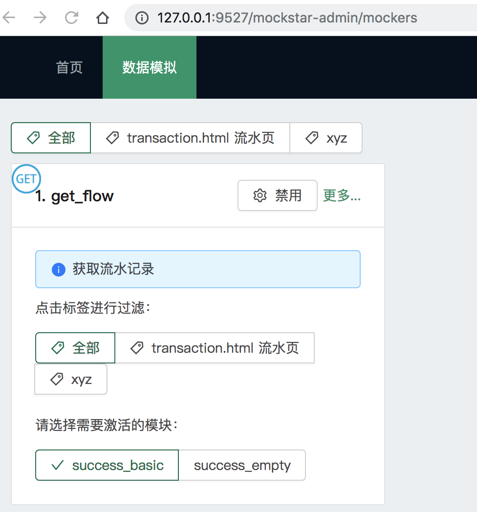
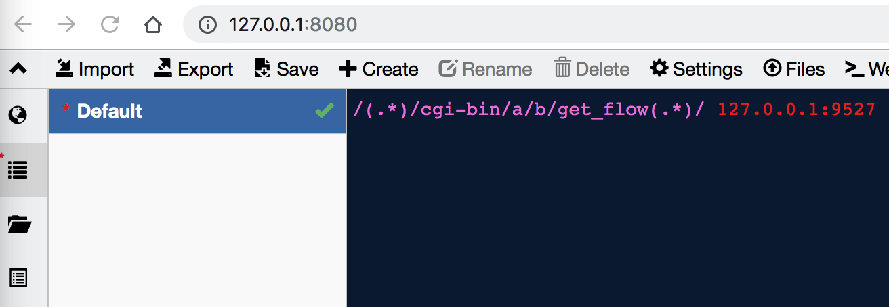
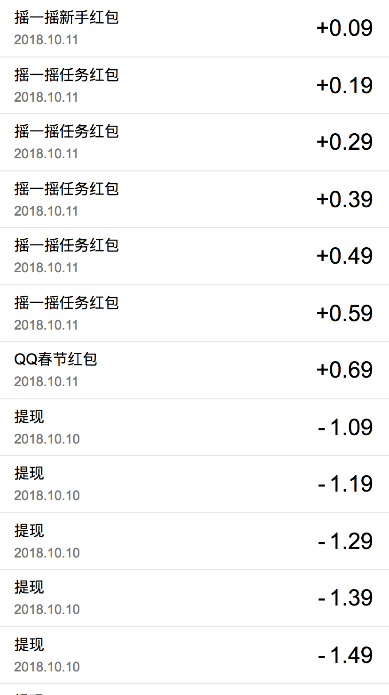

示例二
运行示例项目后，示例二的页面地址为http://localhost:3000/transaction ，但是直接访问可以看到什么都没有，这是因为示例二的页面发送的http请求没有数据导致的。
mockstar
本例中我们使用mockstar提供请求数据来渲染页面，以下会介绍mockstar的简单操作，mockstar的具体说明参见mockstar文档
示例项目相对路径DevOpts/mockstar-app下已经有了一个已经完成的mockstar项目，我们要做的只是运行它。
首先mockstar的运行依赖全局依赖mockstar-cli,因此首先需要安装该依赖，其次安装mockstar-app内的其它依赖，在终端/控制台中切换到mockstar-app下，运行如下命令：
# 安装全局依赖mockstar-cli
npm i -g mockstar-cli
# 安装项目依赖
npm i
然后就可以正式开始mockstar项目了，运行如下命令
npm start
看到如下界面，说明运行成功
> mockstar-app@ start /Users/hebly723/git/matman-demo/DevOpts/mockstar-app
> mockstar start --watch
Load config file: /Users/hebly723/git/matman-demo/DevOpts/mockstar-app/mockstar.config.js
[i] MockStar@1.1.3 is running for /Users/hebly723/git/matman-demo/DevOpts/mockstar-app
http://127.0.0.1:9527
http://10.64.66.73:9527
代理设置
mockstar提供了桩数据，但是需要将页面的请求地址代理到mockstar的端口才可以正常使用，所以需要一款代理应用。
这边推荐使用whistle，安装和使用请参考whistle中文文档
运行如下命令打开whistle
w2 restart -p 8080
打开 http://127.0.0.1:9527 ，可以看到如下界面

点击选项卡中的更多，进入数据模拟页
界面上有显示建议的whistle代理设置，/(.*)/cgi-bin/a/b/get_flow(.*)/ 127.0.0.1:9527
直接复制黏贴进whistle的设置中，如下

Ctrl+s 保存，但如果要在浏览器中查看的话，还需要安装switchOmega，具体操作参照switchOmega
设置浏览器使用给定的代理之后，就可以看见如下界面：
